- Я, ассенизатор и водовоз,
- Революцией мобилизованный и призванный…
- В.Маяковский
- Революцией мобилизованный и призванный…
Мастер плаката не может пройти мимо проблем жизни общества; жанр его искусства по природе своей предназначен вскрывать негативные явления социального бытия, давать им справедливую оценку, подвергать критике.
Юрий Тореев борется за очищение нашего общества от пороков, грехов и ошибок — борется теми средствами, которые ему доступны. Нередко звучит в его плакатах и графических листах голос протеста против зажима свободы слова и свободы деятельности человека. Художник пишет само слово «Свобода» как стоящее на коленях (рис. 98), то есть в позе рабства и подчинения. Нередко волю человека сковывает не внешний запрет, но страх. Красноречив рисунок, изображающий голову человека без лица (рис. 99). Страх цензуры и контроля лишил его глаз, ушей и рта, превратив голову в чурбан, заросший волосами. Такой человек не только бесполезен для общества, но и вреден. Возможен ли какой-либо прогресс в деятельности человечества при отсутствии свободы слова и труда?
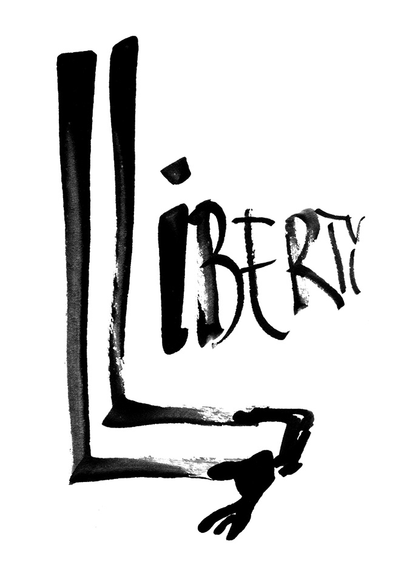
98.
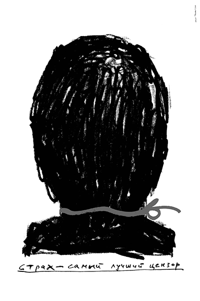
99.
Мини-плакат (рис. 100) показывает современного человека, заключенного в тесную раму всевозможных ограничений. Он отчаянно напрягает всё тело, упирается в свою клетку руками и ногами, но не может её сломать. Он осуждён жить в неволе и утешаться афоризмом о свободе как осознанной необходимости. Более проработанный вариант этого мотива см. на (рис. 101).
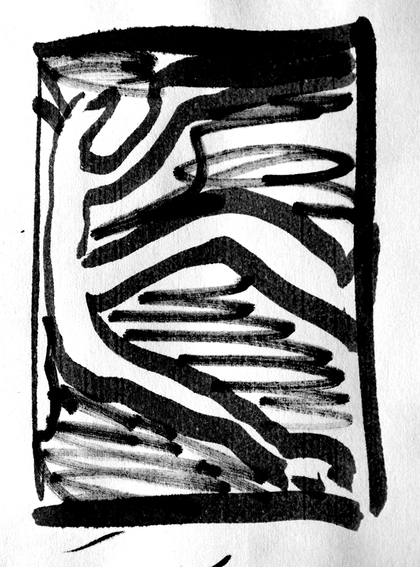
100.
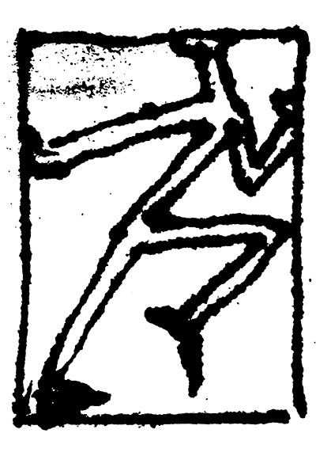
101.
А может быть, иной раз человек не в силах запретить другому распоряжаться собой, или, образно говоря, «ездить на себе» — и от этого терпит зло? На рис.102 мы видим визуализацию этой метафоры. Посочувствуем этому несчастному «коню».
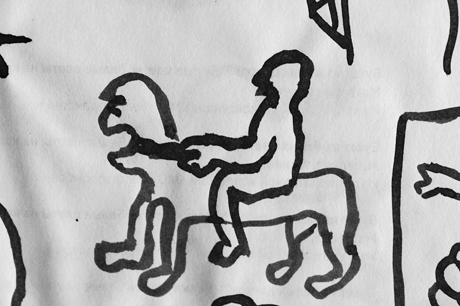
102.
Современный художник, может быть, более других ощущает отсутствие свободы деятельности как трудную жизненную проблему. Душа его требует заниматься живописью, искусством — а жизнь ставит препятствия. Искусство не способно предоставить художнику то, что необходимо для жизни, существования. А если художник работает на заказ — он вынужден в чём-то подчиняться воле и вкусам заказчика. Поневоле в душе его возникает тоска по свободе и протест против её ограничений.
Чрезмерное принуждение человека к чему-либо сверх-природному приводит к деформациям личности и сдвигам в самой его (человека) природе (рис. 103). Вот человек-стул. Постоянное сидение его в офисе за скучной и, может быть, бессмысленной работой исказило его фигуру, превратив её в подобие стула. Он согнулся в три погибели. Его седалищная часть несёт следы начальственных внушений, — она изранена и изрезана. Его руки протянуты навстречу очередному мучителю, как бы пытаясь защититься от него, но — тщетно! Быть на его заду новым шрамам… Этот плакат — театральная афиша. На нём выражена главная идея спектакля — унижение человеческой личности в условиях современной цивилизации.
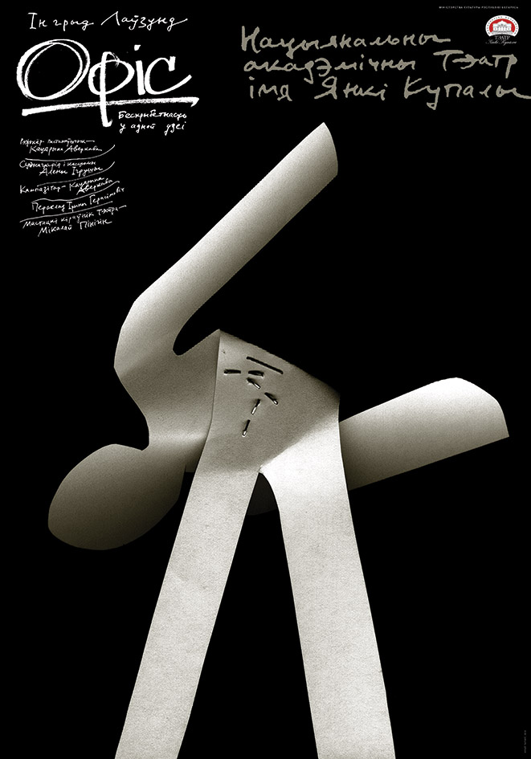
103.
Этот гвоздь — аллегория гражданина Беларуси, согнутого грубой силой цензуры (рис. 104). Будь он прямым, он мог бы служить добрую службу своей родине — мало ли на что пригоден гвоздь? Но согнула его дугой свирепая цензура, окружила забором запретов — и увяла его сила, как трава в засуху. На что он теперь пригоден?
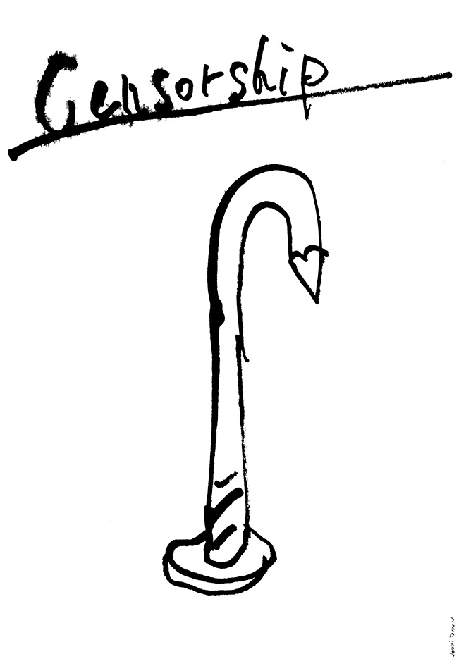
104.
Художник напоминает: особо опасны для женской половины рода человеческого такие болезни, как стрессы, депрессии и насилие (рис. 105). Все эти явления могут иметь место в быту, в обыкновенной семье, внешне благополучной, есло члены семьи эгоистичны и недостаточно чутки к проблемам женщины — матери, супруги, дочери… Плакат Юрия Тореева нужно было бы вручать всем новобрачным и установить патронажный контроль исполнения правил общежития в семье (как легко сочинять утопии!)
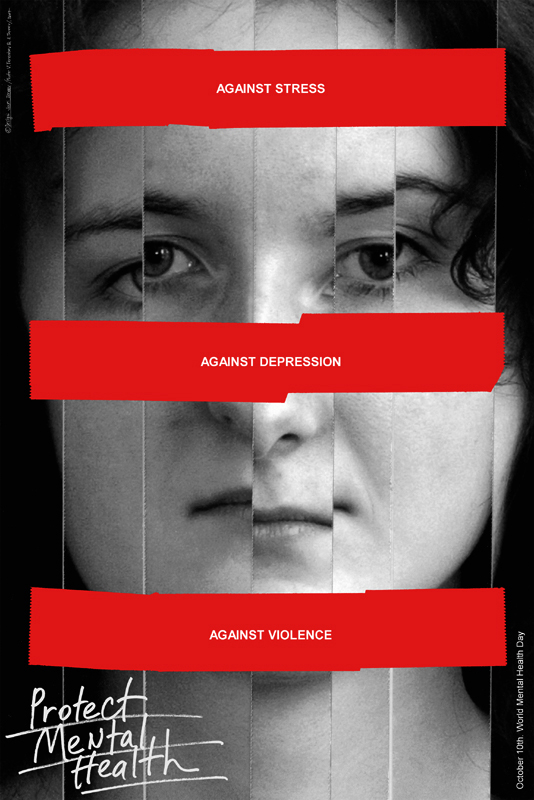
105.
Афиша спектакля «Щелкунчик» по повести Э. Т. А. Гофмана не была принята руководством театра (рис. 106). Думаю, руководители театра почувствовали необычайную остроту сатиры этого плаката, граничащую с ненавистью и злобой. Естественно, Художника возмущает состояние нынешней так называемой молодёжной культуры, пропагандирующей насилие, секс, наркоманию, сквернословие, бездуховность… На плакате рот мальчика превратился в мрачную зловонную клоаку, полную нечистот и изрыгающую нечистоты. Даже взгляд этого мальчика стал нахальным, циничным, жестоким… Художник Юрий Тореев пытается, как может, бороться с тлетворным влиянием этой «культуры», деформирующей психику молодёжи.
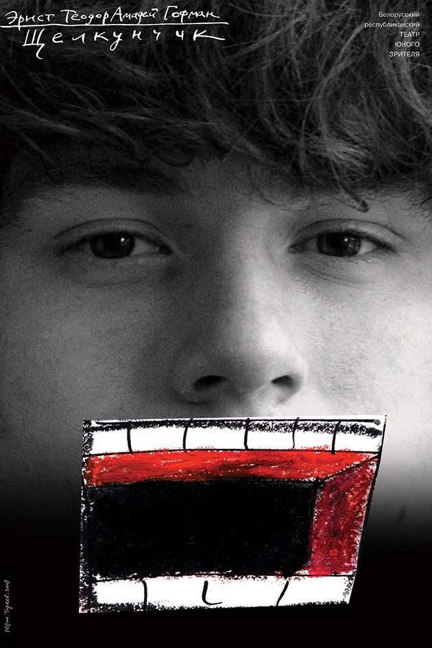
106.
Курица – это символ самoй жизни: материнства, многодетности, плодовитости, домовитости. Хорошую домохозяйку ласково зовут наседкой. Это милая кроткая птица, кормилица семьи. Она умеет нести золотые яйца. И вдруг — обуяла её гордыня и безумие: не желает она высиживать цыплёнка, безжалостной лапой топчет она яйцо, уничтожая ею же рождённое живое существо (рис. 107).
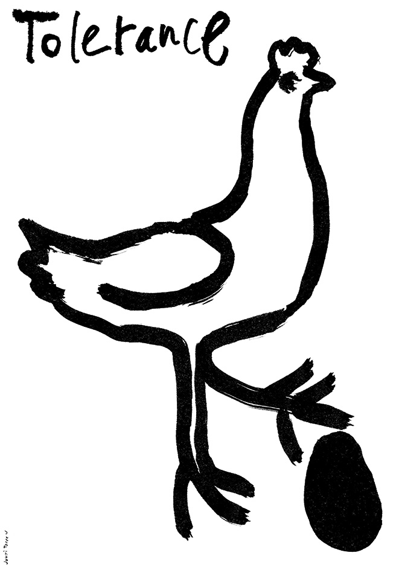
107.
Не много ли умнее дочери человеческие, когда убивают младенцев во чреве своём, зачатых ими же, а люди, видя это, не возмущаются и терпят это зло. Терпение, терпеливость — ценное качество человека, помогающее ему в жизненных невзгодах. Терпимость же к злу — преступление, хотя и неподсудное.
Плакат Юрия Тореева настолько актуален и красноречив, что был отмечен на Всемирном конкурсе плакатов в 2012 году. Из 1000 поданных на конкурс работ этот плакат занесен в первую тридцатку лучших.
Прекрасное женское лицо изуродовано, разрублено пополам, покрыто черными пятнами (рис. 108). Перевёрнутый глаз смотрит с ужасом и отчаянием. Будет ли конец разгулу насилия над женщинами, прекратится ли когда-нибудь пропаганда насилия в искусстве и СМИ? Художник добился сильного эффекта максимально простым приёмом — разрезал фотографии на четыре части и повернул две из них на 180°. Бесформенные чёрные пятна дополнили страшную картину разрушения личности.
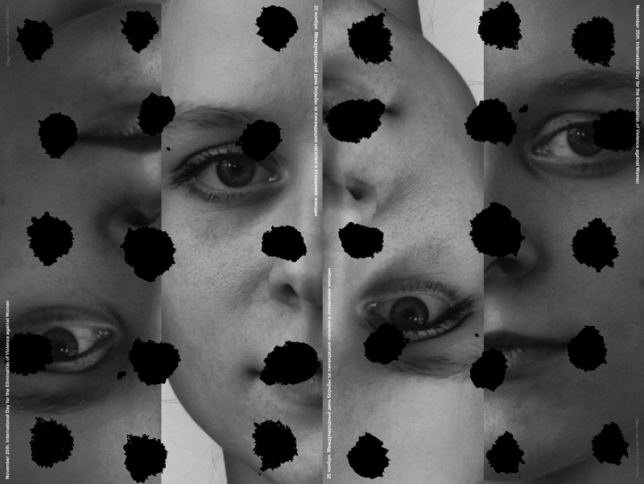
108.
Эти пятна останутся в душе женщины на всю жизнь, отравляя её незримо для других.
Вот что может сделать с человеком состояние ужаса! (рис. 109)
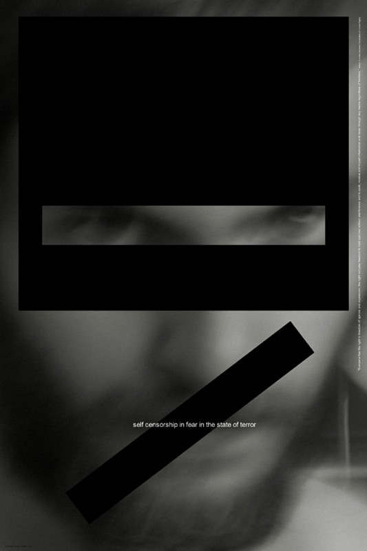
109.
«День слепых» (рис. 110). Юрий Тореев отзывчив на беды и несчастья, постигшие других людей. Не может не вызвать сочувствия человек, лишённый зрения. Он одинок в пустынном мире ещё более, чем мы, зрячие: мы много смотрим, но мало видим. Суть вещей скрыта от нашего духовного взора, как бы широко мы ни открывали глаза, подобно этому огромному белому глазу на плакате Юрия Тореева. Поможем и слепым, и самим себе!
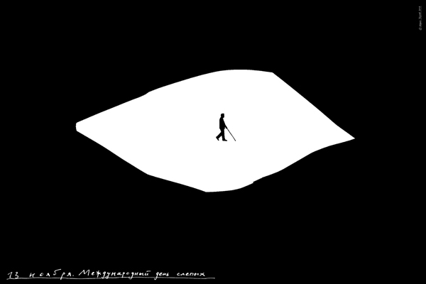
110.
«Помогите Японии!» (рис. 111) Она поражена в самое сердце, потрясены основы её бытия, отравлены её хлеб, вода и младенцы в утробах её женщин. Помните! Мы не застрахованы от повторения атомной катастрофы — но в гораздо бoльших масштабах. Помогите Японии!
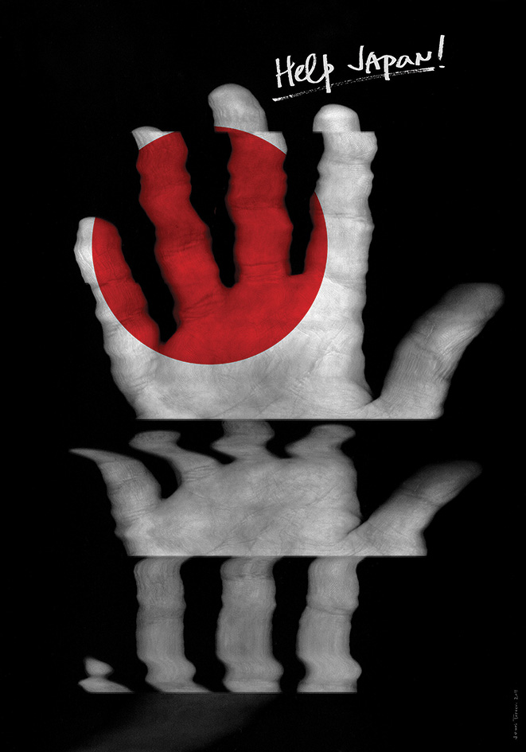
111.
Л. Миронова,
03.04.2014